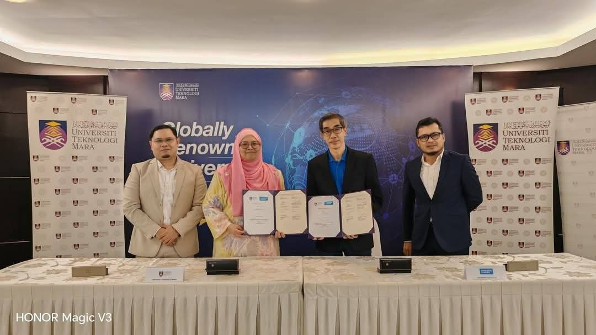
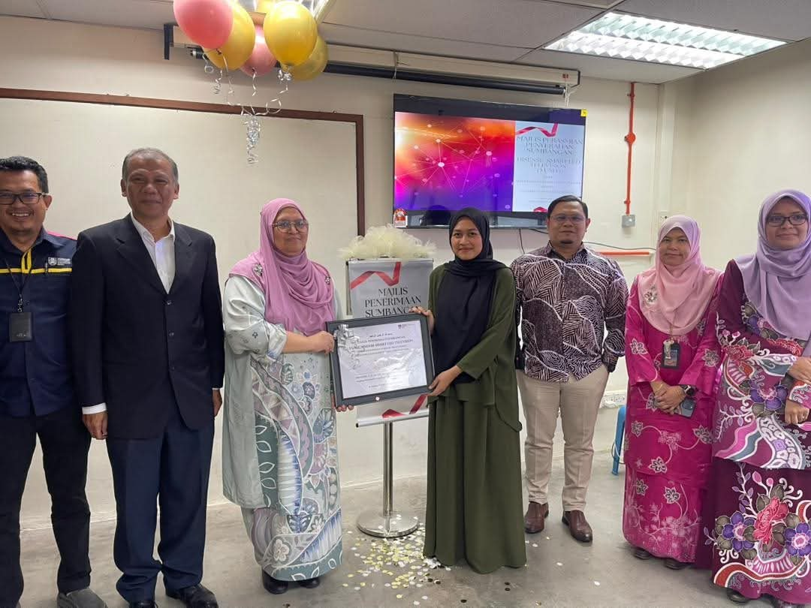
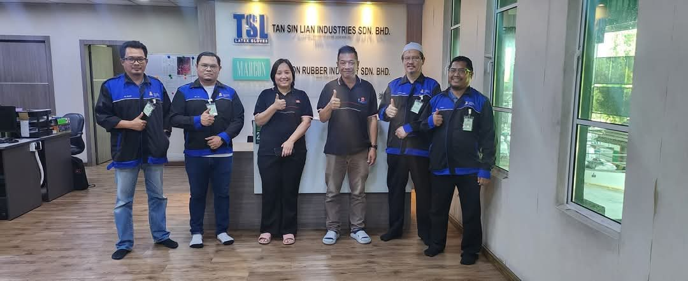
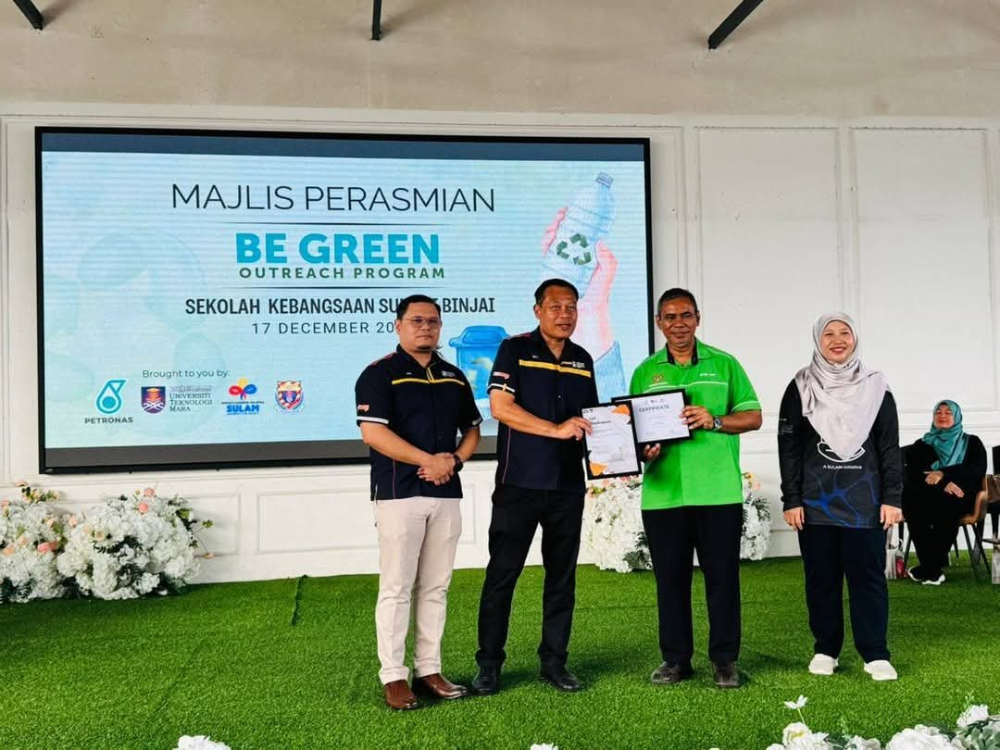
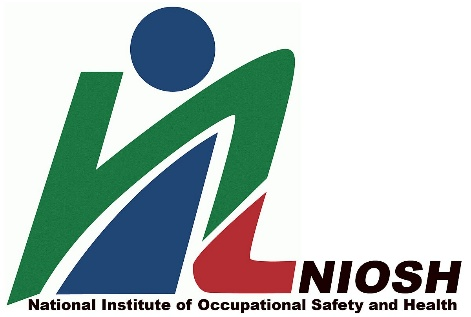
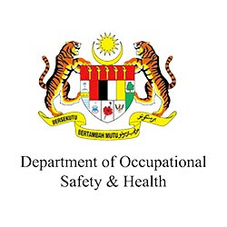
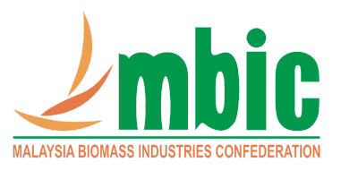
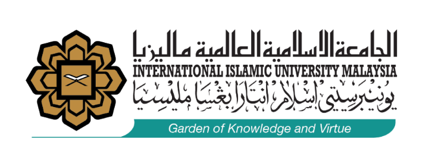

Industry
Engineering expertise that industry relies on: CIMAH safety cases, risk assessment, hazardous-area classification and training.
Consultancy value by year
2025 was the strongest year: RM 643,594.
What the work covers
- CIMAH safety reports and major-hazard risk assessment for chemical, glove, oleochemical, fuel and port facilities
- Hazardous-area classification and dust-explosion zoning
- Biomass gasification system design for co-generation (Project Leader)
- R&D rebranding and standards study for NIOSH (Project Leader)
- Knowledge-transfer programmes and industry training
How a major-hazard safety case works
Malaysia's Control of Industrial Major Accident Hazards (CIMAH) Regulations require plants that store large amounts of dangerous substances to prove they are safe. He has contributed to more than 239 of these reports.
- Part A · HazardsIdentify dangerous substances and major-accident scenarios
- Part B · InstallationDescribe the site, process units and surroundings
- Part C · Safety systemSafety management, consequence modelling and risk estimates
- Outcome · Safer plantReport accepted by DOSH; emergency plans and risks controlled
Trusted by Malaysian industry
A selection of the 58 organisations served.
Industry agreements
Person in charge of Memoranda of Agreement with One Gasmaster Sdn Bhd and Master Jaya Greentech Sdn Bhd.
CEO@Faculty
Appointed and coordinated industry leaders who teach in the College of Engineering.
Alumni contributions
Secured t-Navigator reservoir simulation software (100 users), Safetii safety software (RM 200,000) and five smart-classroom TVs for the School.





Expertise in service of the nation
National safety expert
Expert panel member for Safety Marking with NIOSH and the Department of Occupational Safety & Health (DOSH).
Biomass roadmap
Contributor to strategic planning and the biomass roadmap of the Malaysia Biomass Industries Confederation (MBIC).
Environmental training
Developed Total Maximum Daily Load training for the Department of Environment, plus plant-operator programmes for industry.
Community
Outreach such as Be Green with industry partners, and student welfare such as Help for Hope 3.0 (2025).



